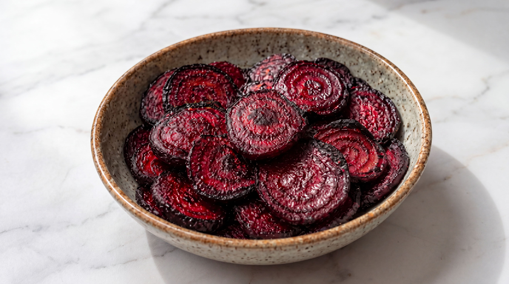
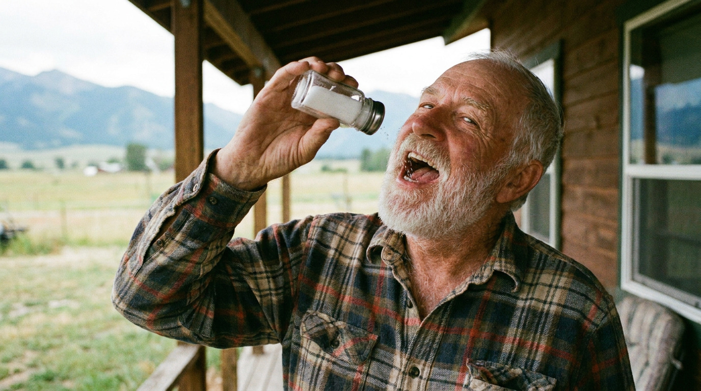
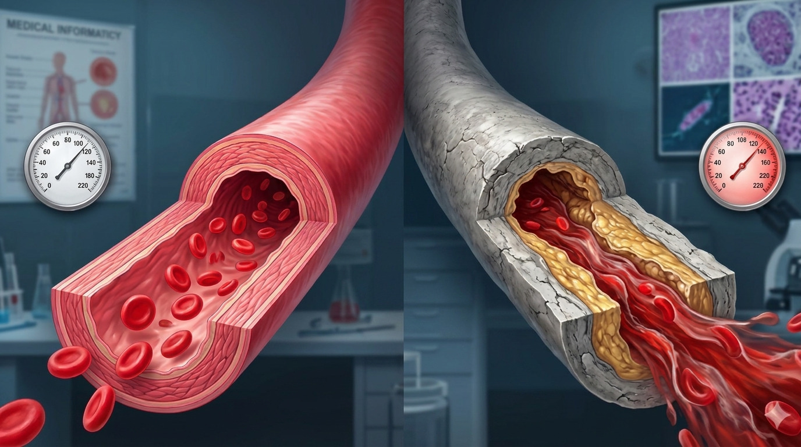

In the most-watched episode of 60 Minutes this past month, Dr. Sanjay Gupta revealed something that took 8 years to study.
No stent surgeries. No prescription drugs with dangerous side effects.
This new natural method is successfully stabilizing the blood pressure of 10 million Americans a feat that Big Pharma has yet to achieve.
The program aired last week and has already generated over 4.5 million online views, with thousands of families sharing it and asking the exact same question:
How?
Dr. Gupta attributed the success to a simple natural protocol, backed by years of joint research with Harvard University. Doctors and families across the country are calling it the most important thing they have watched all year.
The reason for the nationwide viral impact in less than 24 hours is how easily this trick can be done.
You likely already have all the ingredients to make this recipe today.
So, if you are sick and tired of that chronic Lisinopril cough , feel overwhelming fatigue just climbing stairs, or live like a ticking time bomb , terrified of your next reading&
&you are definitely not alone.
Discover this simple home method and reclaim your independence before this interview is taken down.
Sponsored Stories
by TaboolaThis Household Staple Found in 9 Out of 10 Kitchens Is Now Tied to High Blood Pressure Risk.
Cardiologists Identified the #1 Dietary Driver of Blood Pressure Spikes.
Blood Pressure Spikes Have Been Directly Linked to a Beverage Most Americans Drink Before 9AM.

The "Silent Killer" Has Been Tied to This Everyday Food — Do You Eat It Often?
U.S. Cardiologists Now Call This Popular Morning Drink "A Ticking Time Bomb for Your Arteries" — Do You Drink It?

Seniors: don't cut salt from your diet. You need to boost nitric oxide.

The Aging Trap: How "Arterial Cement" Turns Flexible Blood Vessels into Stiff, High-Pressure Pipes.
This Simple 3-Ingredient Morning Trick Helps Scrub Away Arterial Plaque and Reset Your Numbers.
Doctors Stunned: 3-Ingredient Bedtime Ritual Directly Targets Clogged Plaques to Reverse Blood Pressure Stress
36,158 Comments
Madelyn Brown
My numbers came back to a perfect 120/80 after just 3 weeks. Honestly, I thought I'd spend the rest of my life dealing with puffy ankles and that constant dry cough from the pills. Having my energy and peace of mind back is a blessing I never thought I'd experience.
James Miller
Just watched the video. I've never heard anyone explain the 'silent killer' and stiff arteries like that before. Everything makes so much sense now — I'm excited to start the ritual today.
Charlotte Wilson
I tried everything—cutting out salt, deep breathing exercises, and even various prescription medications that just made me dizzy. Nothing worked. After 15 years of struggling with fluctuating levels and constant fatigue, my numbers are finally stable, and I feel like myself again. Thank you, Dr. Gupta.
Robert Hayes
Finally back to a perfect 120/80 without that constant morning panic. No more yoyo numbers or fighting with the cuff. This ritual actually works.
This post is no longer receiving comments!